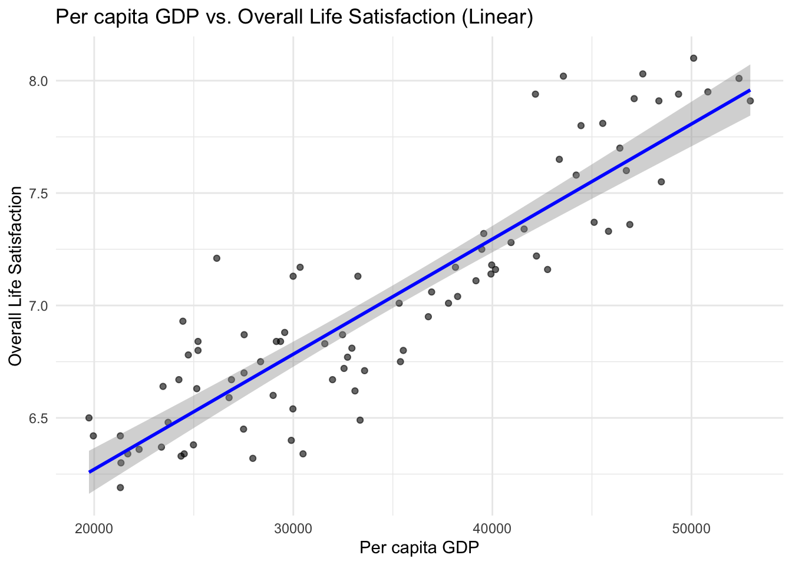
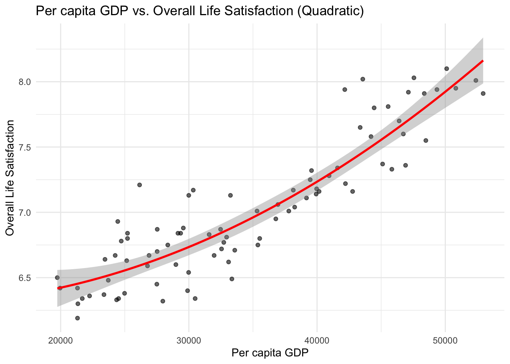
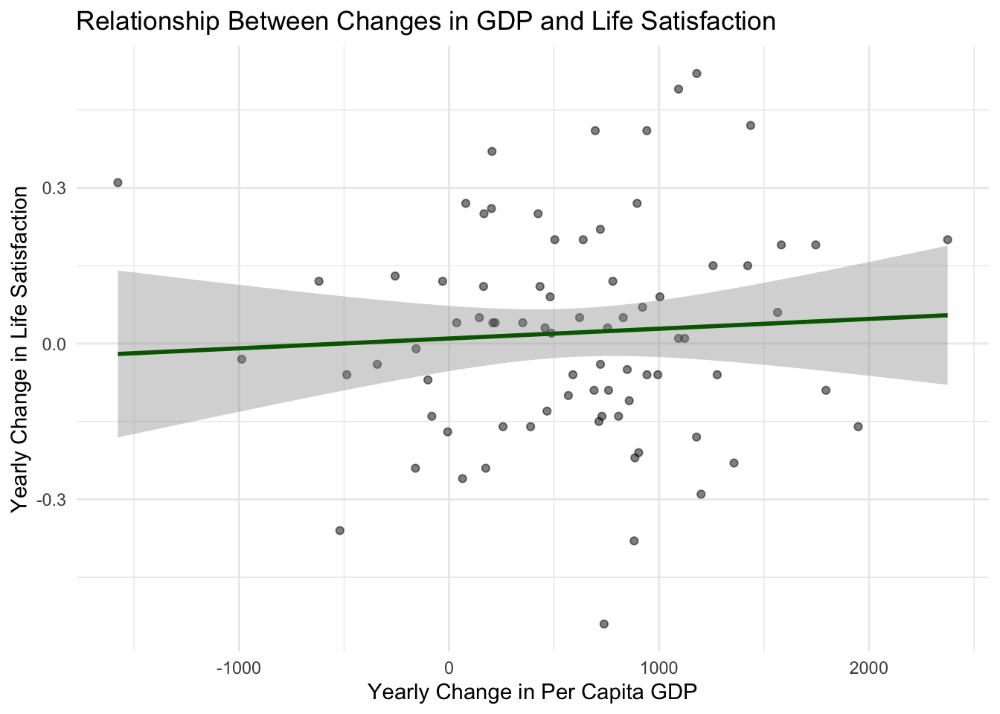

Tutorial #3. Linear regressions and statistical tests
Introduction to programming for data analysis
M1 Economics / Intro to Programming / tutorial-3
Disclaimer
This HTML page was generated with Claude Sonnet 5 based on exercises we developed from a LaTeX document.
If you would prefer to work with a more traditional PDF version, you can download it here: Download the PDF.
Part of the content was created by Pierre Michel (AMSE) and Morgan Raux (AMSE) who kindly shared their work.
This tutorial focuses on regression models and statistical hypothesis testing. After completing Tutorial #2, you should be able to create basic data visualizations and compute summary statistics. Building on these skills, you are now ready to run regression analyses and apply statistical modeling techniques.
In Tutorial #1, you downloaded datasets from Eurostat, merged them into a single dataset in R, and exported the result as a CSV file.
Objectives of the tutorial
In this tutorial, you will use the dataset from exercise 2 of Tutorial #1 to:
- create visualizations to examine the relationship between the two main variables (per capita GDP and overall life satisfaction),
- estimate regression models, including both linear and nonlinear specifications for panel data.
Did not finish tutorial 1?
Didn’t get to finish combining the data in Tutorial 1? Grab the ready-to-use file below and save it to the data/out/ folder of your project.
Q1. Import the dataset that you saved at the end of exercise 2 of Tutorial #1.
The file lives in your data/out/ folder — build the relative path from your project root.
library(readr)
# Import data path from your project repository structure
tb <- read_csv("data/out/gdp-lifesat.csv")Rows: 84 Columns: 4
── Column specification ────────────────────────────────────────────────────────
Delimiter: ","
chr (1): country
dbl (3): year, gdp, life_satisf
ℹ Use `spec()` to retrieve the full column specification for this data.
ℹ Specify the column types or set `show_col_types = FALSE` to quiet this message.# A tibble: 84 × 4
country year gdp life_satisf
<chr> <dbl> <dbl> <dbl>
1 FR 2010 32548. 6.72
2 IT 2010 26774. 6.59
3 DE 2010 38145. 7.17
4 ES 2010 24253. 6.67
5 NL 2010 42162. 7.94
6 PT 2010 19958. 6.42
7 FR 2011 33245. 7.13
8 IT 2011 27502. 6.45
9 DE 2011 39567. 7.32
10 ES 2011 24455. 6.93
# ℹ 74 more rowsScatterplots
A scatterplot visually represents the relationship between two variables. In the current dataset, it is useful to examine how per capita GDP relates to overall life satisfaction.
GDP and life satisfaction
Q2. Create a scatterplot to display the relationship between per capita GDP and overall life satisfaction. Label the x-axis “Per capita GDP” and the y-axis “Overall Life Satisfaction”. Use the title “Per capita GDP vs. Overall Life Satisfaction” for the graph.
Map x = gdp and y = life_satisf inside aes(), then use geom_point().
Q3. Add a linear regression line to the scatterplot.
geom_smooth() adds a fitted trend line; set method = "lm" for a straight linear fit, and se = TRUE to show the confidence band.
ggplot(data = tb, mapping = aes(x = gdp, y = life_satisf)) +
geom_point(alpha = 0.6) +
geom_smooth(method = "lm", color = "blue", se = TRUE) +
labs(
x = "Per capita GDP",
y = "Overall Life Satisfaction",
title = "Per capita GDP vs. Overall Life Satisfaction (Linear)"
) +
theme_minimal()`geom_smooth()` using formula = 'y ~ x'
Q4. Add a quadratic curve to the scatterplot.
Still method = "lm", but change the formula argument to include a squared term: y ~ x + I(x^2).
ggplot(data = tb, mapping = aes(x = gdp, y = life_satisf)) +
geom_point(alpha = 0.6) +
geom_smooth(
method = "lm", formula = y ~ x + I(x^2), color = "red", se = TRUE
) +
labs(
x = "Per capita GDP",
y = "Overall Life Satisfaction",
title = "Per capita GDP vs. Overall Life Satisfaction (Quadratic)"
) +
theme_minimal()
Changes in GDP and life satisfaction
Q5. Create two new columns, gdp_yoy and life_satisf_yoy, which represent the within-country year-on-year changes in GDP and life satisfaction, respectively.
This is panel data: to compute a year-on-year change correctly, you must first sort observations chronologically within each country.
arrange(country, year) followed by group_by(country), then use lag() inside mutate() to access the previous year’s value.
Because this is panel data, we must sort chronologically and group by country before calculating changes to avoid mixed metrics between borders:
tb <- tb |>
arrange(country, year) |>
group_by(country) |>
mutate(
gdp_yoy = gdp - lag(gdp),
life_satisf_yoy = life_satisf - lag(life_satisf)
) |>
ungroup()
tb# A tibble: 84 × 6
country year gdp life_satisf gdp_yoy life_satisf_yoy
<chr> <dbl> <dbl> <dbl> <dbl> <dbl>
1 DE 2010 38145. 7.17 NA NA
2 DE 2011 39567. 7.32 1422. 0.150
3 DE 2012 39467. 7.25 -101. -0.0700
4 DE 2013 40157. 7.16 691. -0.0900
5 DE 2014 40937. 7.28 780. 0.120
6 DE 2015 42214 7.22 1277. -0.0600
7 DE 2016 41594. 7.34 -620. 0.120
8 DE 2017 42773. 7.16 1178. -0.180
9 DE 2018 44209. 7.58 1436. 0.42
10 DE 2019 45112. 7.37 903. -0.21
# ℹ 74 more rowsQ6. Create a scatterplot to illustrate the relationship between gdp_yoy and life_satisf_yoy.
- Place the year-on-year variation in life satisfaction on the y-axis and label it “Yearly Change in Life Satisfaction”.
- Place the year-on-year variation in per capita GDP on the x-axis and label it “Yearly Change in Per Capita GDP”.
- Title the graph “Relationship Between Changes in GDP and Life Satisfaction”.
- Add a linear regression line to the scatterplot.
ggplot(data = tb, mapping = aes(x = gdp_yoy, y = life_satisf_yoy)) +
geom_point(alpha = 0.5) +
geom_smooth(method = "lm", color = "darkgreen") +
labs(
x = "Yearly Change in Per Capita GDP",
y = "Yearly Change in Life Satisfaction",
title = "Relationship Between Changes in GDP and Life Satisfaction"
) +
theme_minimal()`geom_smooth()` using formula = 'y ~ x'Warning: Removed 6 rows containing non-finite outside the scale range
(`stat_smooth()`).Warning: Removed 6 rows containing missing values or values outside the scale range
(`geom_point()`).
OLS Regression
Q7. Examine and evaluate the following instructions. Then, explain what they do.
The lm() command calculates a standard pooled ordinary least squares (OLS) linear model mapping the effect of independent variable gdp onto dependent metric life_satisf. Calling summary() prints the descriptive evaluation properties: regression estimates (\(\hat{\beta}\) parameters), standard errors, \(t\)-statistics, associated \(p\)-values, and overall model diagnostics (\(R^2\) variance performance).
Call:
lm(formula = life_satisf ~ gdp, data = tb)
Residuals:
Min 1Q Median 3Q Max
-0.46838 -0.16505 -0.03234 0.16965 0.62345
Coefficients:
Estimate Std. Error t value Pr(>|t|)
(Intercept) 5.247e+00 9.900e-02 53.00 <2e-16 ***
gdp 5.120e-05 2.777e-06 18.44 <2e-16 ***
---
Signif. codes: 0 '***' 0.001 '**' 0.01 '*' 0.05 '.' 0.1 ' ' 1
Residual standard error: 0.2306 on 82 degrees of freedom
Multiple R-squared: 0.8056, Adjusted R-squared: 0.8033
F-statistic: 339.9 on 1 and 82 DF, p-value: < 2.2e-16Q8. Examine and evaluate the following instructions. Then, explain what they do.
The function converts the raw statistical model object metrics directly into a formatted LaTeX tabular canvas, printing and writing the compiled outputs to the external filepath location: tables/model_lm.tex.
% Table created by stargazer v.5.2.3 by Marek Hlavac, Social Policy Institute. E-mail: marek.hlavac at gmail.com
% Date and time: Sat, Aug 22, 2026 - 23:47:44
\begin{table}[!htbp] \centering
\caption{}
\label{}
\begin{tabular}{@{\extracolsep{5pt}}lc}
\\[-1.8ex]\hline
\hline \\[-1.8ex]
& \multicolumn{1}{c}{\textit{Dependent variable:}} \\
\cline{2-2}
\\[-1.8ex] & life\_satisf \\
\hline \\[-1.8ex]
gdp & 0.0001$^{***}$ \\
& (0.00000) \\
& \\
Constant & 5.247$^{***}$ \\
& (0.099) \\
& \\
\hline \\[-1.8ex]
Observations & 84 \\
R$^{2}$ & 0.806 \\
Adjusted R$^{2}$ & 0.803 \\
Residual Std. Error & 0.231 (df = 82) \\
F Statistic & 339.906$^{***}$ (df = 1; 82) \\
\hline
\hline \\[-1.8ex]
\textit{Note:} & \multicolumn{1}{r}{$^{*}$p$<$0.1; $^{**}$p$<$0.05; $^{***}$p$<$0.01} \\
\end{tabular}
\end{table} Fixed effects regression
Q9. Extend the previous regression model by including country fixed effects to account for unobserved, time-invariant differences across countries.
Add country as a right-hand-side term, wrapped in factor() so it is treated as a categorical variable (a set of dummies) rather than a numeric one.
We append country variables as dummy indices using the factor() wrapper:
Call:
lm(formula = life_satisf ~ gdp + factor(country), data = tb)
Residuals:
Min 1Q Median 3Q Max
-0.25079 -0.09356 -0.02203 0.07724 0.36297
Coefficients:
Estimate Std. Error t value Pr(>|t|)
(Intercept) 6.111e+00 2.532e-01 24.132 < 2e-16 ***
gdp 2.847e-05 5.826e-06 4.886 5.47e-06 ***
factor(country)ES -8.190e-03 1.060e-01 -0.077 0.93860
factor(country)FR -1.778e-01 6.509e-02 -2.731 0.00783 **
factor(country)IT -3.878e-01 8.932e-02 -4.342 4.25e-05 ***
factor(country)NL 4.453e-01 5.763e-02 7.727 3.41e-11 ***
factor(country)PT -3.484e-01 1.293e-01 -2.695 0.00865 **
---
Signif. codes: 0 '***' 0.001 '**' 0.01 '*' 0.05 '.' 0.1 ' ' 1
Residual standard error: 0.1363 on 77 degrees of freedom
Multiple R-squared: 0.9362, Adjusted R-squared: 0.9313
F-statistic: 188.4 on 6 and 77 DF, p-value: < 2.2e-16Q10. Extend the country fixed-effects model by adding year fixed effects to control for common shocks across all countries in a given year.
Same idea as Q9, but add a second factor() term for year alongside factor(country).
model_country_time_fe <- lm(
life_satisf ~ gdp + factor(country) + factor(year),
data = tb
)
summary(model_country_time_fe)
Call:
lm(formula = life_satisf ~ gdp + factor(country) + factor(year),
data = tb)
Residuals:
Min 1Q Median 3Q Max
-0.27734 -0.09213 -0.01137 0.08435 0.37589
Coefficients:
Estimate Std. Error t value Pr(>|t|)
(Intercept) 6.657e+00 8.959e-01 7.431 3.24e-10 ***
gdp 1.489e-05 2.281e-05 0.653 0.5161
factor(country)ES -2.240e-01 3.664e-01 -0.611 0.5431
factor(country)FR -2.705e-01 1.646e-01 -1.643 0.1052
factor(country)IT -5.578e-01 2.905e-01 -1.920 0.0593 .
factor(country)NL 5.054e-01 1.142e-01 4.424 3.84e-05 ***
factor(country)PT -6.248e-01 4.673e-01 -1.337 0.1859
factor(year)2011 1.275e-02 8.413e-02 0.152 0.8800
factor(year)2012 1.966e-02 8.344e-02 0.236 0.8145
factor(year)2013 1.365e-02 8.870e-02 0.154 0.8782
factor(year)2014 1.481e-02 9.623e-02 0.154 0.8781
factor(year)2015 1.129e-02 1.054e-01 0.107 0.9150
factor(year)2016 -5.161e-02 1.100e-01 -0.469 0.6404
factor(year)2017 -2.623e-02 1.242e-01 -0.211 0.8334
factor(year)2018 1.341e-01 1.377e-01 0.974 0.3339
factor(year)2019 3.522e-02 1.447e-01 0.243 0.8084
factor(year)2020 7.722e-02 1.615e-01 0.478 0.6343
factor(year)2021 4.196e-02 1.730e-01 0.242 0.8092
factor(year)2022 8.048e-02 1.842e-01 0.437 0.6636
factor(year)2023 1.576e-01 1.951e-01 0.808 0.4223
---
Signif. codes: 0 '***' 0.001 '**' 0.01 '*' 0.05 '.' 0.1 ' ' 1
Residual standard error: 0.141 on 64 degrees of freedom
Multiple R-squared: 0.9433, Adjusted R-squared: 0.9265
F-statistic: 56.07 on 19 and 64 DF, p-value: < 2.2e-16Q11. Examine and evaluate the following instructions. Then, explain what they do.
stargazer(
model_lm, model_country_fe, model_country_time_fe,
type = "latex",
out = "tables/regression_results.tex",
title = "Correlation between per capita GDP and life satisfaction",
column.labels = c("Baseline OLS Reg.", "Country FE", "Country and Year FE"),
covariate.labels = c("per capita GDP"),
add.lines = list(
c('Country FE', '-', 'Yes', 'Yes'),
c('Year FE', '-', '-', 'Yes')
)
)This block merges the baseline, country FE, and two-way FE models into a single side-by-side LaTeX compilation table. It replaces the long list of individual dummy coefficients with neat summary rows using custom indicators in add.lines, saves the resulting output inside tables/regression_results.tex, and updates the column titles appropriately.
% Table created by stargazer v.5.2.3 by Marek Hlavac, Social Policy Institute. E-mail: marek.hlavac at gmail.com
% Date and time: Sat, Aug 22, 2026 - 23:47:45
\begin{table}[!htbp] \centering
\caption{Correlation between per capita GDP and life satisfaction}
\label{}
\begin{tabular}{@{\extracolsep{5pt}}lccc}
\\[-1.8ex]\hline
\hline \\[-1.8ex]
& \multicolumn{3}{c}{\textit{Dependent variable:}} \\
\cline{2-4}
\\[-1.8ex] & \multicolumn{3}{c}{life\_satisf} \\
& Baseline OLS Reg. & Country FE & Country and Year FE \\
\\[-1.8ex] & (1) & (2) & (3)\\
\hline \\[-1.8ex]
per capita GDP & 0.0001$^{***}$ & 0.00003$^{***}$ & 0.00001 \\
& (0.00000) & (0.00001) & (0.00002) \\
& & & \\
factor(country)ES & & $-$0.008 & $-$0.224 \\
& & (0.106) & (0.366) \\
& & & \\
factor(country)FR & & $-$0.178$^{***}$ & $-$0.270 \\
& & (0.065) & (0.165) \\
& & & \\
factor(country)IT & & $-$0.388$^{***}$ & $-$0.558$^{*}$ \\
& & (0.089) & (0.291) \\
& & & \\
factor(country)NL & & 0.445$^{***}$ & 0.505$^{***}$ \\
& & (0.058) & (0.114) \\
& & & \\
factor(country)PT & & $-$0.348$^{***}$ & $-$0.625 \\
& & (0.129) & (0.467) \\
& & & \\
factor(year)2011 & & & 0.013 \\
& & & (0.084) \\
& & & \\
factor(year)2012 & & & 0.020 \\
& & & (0.083) \\
& & & \\
factor(year)2013 & & & 0.014 \\
& & & (0.089) \\
& & & \\
factor(year)2014 & & & 0.015 \\
& & & (0.096) \\
& & & \\
factor(year)2015 & & & 0.011 \\
& & & (0.105) \\
& & & \\
factor(year)2016 & & & $-$0.052 \\
& & & (0.110) \\
& & & \\
factor(year)2017 & & & $-$0.026 \\
& & & (0.124) \\
& & & \\
factor(year)2018 & & & 0.134 \\
& & & (0.138) \\
& & & \\
factor(year)2019 & & & 0.035 \\
& & & (0.145) \\
& & & \\
factor(year)2020 & & & 0.077 \\
& & & (0.162) \\
& & & \\
factor(year)2021 & & & 0.042 \\
& & & (0.173) \\
& & & \\
factor(year)2022 & & & 0.080 \\
& & & (0.184) \\
& & & \\
factor(year)2023 & & & 0.158 \\
& & & (0.195) \\
& & & \\
Constant & 5.247$^{***}$ & 6.111$^{***}$ & 6.657$^{***}$ \\
& (0.099) & (0.253) & (0.896) \\
& & & \\
\hline \\[-1.8ex]
Country FE & - & Yes & Yes \\
Year FE & - & - & Yes \\
Observations & 84 & 84 & 84 \\
R$^{2}$ & 0.806 & 0.936 & 0.943 \\
Adjusted R$^{2}$ & 0.803 & 0.931 & 0.926 \\
Residual Std. Error & 0.231 (df = 82) & 0.136 (df = 77) & 0.141 (df = 64) \\
F Statistic & 339.906$^{***}$ (df = 1; 82) & 188.449$^{***}$ (df = 6; 77) & 56.065$^{***}$ (df = 19; 64) \\
\hline
\hline \\[-1.8ex]
\textit{Note:} & \multicolumn{3}{r}{$^{*}$p$<$0.1; $^{**}$p$<$0.05; $^{***}$p$<$0.01} \\
\end{tabular}
\end{table} Non-linear regression
We herein consider non-linear regression models with a dummy as dependent variable, such as probit and logit regression models.
Q12. Compute the median of life satisfaction.
Q13. In the dataset, create a binary variable named life_satisf_above_med, which takes the value 1 if life satisfaction is above the median and 0 otherwise.
# A tibble: 84 × 7
country year gdp life_satisf gdp_yoy life_satisf_yoy
<chr> <dbl> <dbl> <dbl> <dbl> <dbl>
1 DE 2010 38145. 7.17 NA NA
2 DE 2011 39567. 7.32 1422. 0.150
3 DE 2012 39467. 7.25 -101. -0.0700
4 DE 2013 40157. 7.16 691. -0.0900
5 DE 2014 40937. 7.28 780. 0.120
6 DE 2015 42214 7.22 1277. -0.0600
7 DE 2016 41594. 7.34 -620. 0.120
8 DE 2017 42773. 7.16 1178. -0.180
9 DE 2018 44209. 7.58 1436. 0.42
10 DE 2019 45112. 7.37 903. -0.21
# ℹ 74 more rows
# ℹ 1 more variable: life_satisf_above_med <dbl>Q14. Run a probit regression of life_satisf_above_med on gdp, and display the summary of the results.
With a binary dependent variable, lm() is no longer appropriate — use glm() with family = binomial(link = "probit").
We utilize generalized linear model modeling via glm() specifying link definitions:
model_probit <- glm(
life_satisf_above_med ~ gdp,
data = tb,
family = binomial(link = "probit")
)
summary(model_probit)
Call:
glm(formula = life_satisf_above_med ~ gdp, family = binomial(link = "probit"),
data = tb)
Coefficients:
Estimate Std. Error z value Pr(>|z|)
(Intercept) -6.896e+00 1.288e+00 -5.353 8.65e-08 ***
gdp 2.061e-04 3.885e-05 5.305 1.13e-07 ***
---
Signif. codes: 0 '***' 0.001 '**' 0.01 '*' 0.05 '.' 0.1 ' ' 1
(Dispersion parameter for binomial family taken to be 1)
Null deviance: 116.449 on 83 degrees of freedom
Residual deviance: 47.629 on 82 degrees of freedom
AIC: 51.629
Number of Fisher Scoring iterations: 7Q15. Run a logit regression of life_satisf_above_med on gdp, and display the summary of the results.
Same as Q14, but change the link function to "logit".
model_logit <- glm(
life_satisf_above_med ~ gdp,
data = tb,
family = binomial(link = "logit")
)
summary(model_logit)
Call:
glm(formula = life_satisf_above_med ~ gdp, family = binomial(link = "logit"),
data = tb)
Coefficients:
Estimate Std. Error z value Pr(>|z|)
(Intercept) -1.248e+01 2.641e+00 -4.727 2.28e-06 ***
gdp 3.704e-04 7.910e-05 4.683 2.83e-06 ***
---
Signif. codes: 0 '***' 0.001 '**' 0.01 '*' 0.05 '.' 0.1 ' ' 1
(Dispersion parameter for binomial family taken to be 1)
Null deviance: 116.449 on 83 degrees of freedom
Residual deviance: 47.456 on 82 degrees of freedom
AIC: 51.456
Number of Fisher Scoring iterations: 6Statistical tests
Q16. Compute the median of per capita GDP.
Q17. In the dataset, create a binary variable named gdp_above_med, which takes the value 1 if per capita GDP is above the median and 0 otherwise.
# A tibble: 84 × 8
country year gdp life_satisf gdp_yoy life_satisf_yoy
<chr> <dbl> <dbl> <dbl> <dbl> <dbl>
1 DE 2010 38145. 7.17 NA NA
2 DE 2011 39567. 7.32 1422. 0.150
3 DE 2012 39467. 7.25 -101. -0.0700
4 DE 2013 40157. 7.16 691. -0.0900
5 DE 2014 40937. 7.28 780. 0.120
6 DE 2015 42214 7.22 1277. -0.0600
7 DE 2016 41594. 7.34 -620. 0.120
8 DE 2017 42773. 7.16 1178. -0.180
9 DE 2018 44209. 7.58 1436. 0.42
10 DE 2019 45112. 7.37 903. -0.21
# ℹ 74 more rows
# ℹ 2 more variables: life_satisf_above_med <dbl>, gdp_above_med <dbl>Q18. Examine and evaluate the following instructions. Then, explain what they do.
These two instructions split the dataset into two independent numeric vectors: group1 contains the life satisfaction values for countries with below-median GDP, and group2 contains the life satisfaction values for countries with above-median GDP. pull() extracts a single column as a plain vector, rather than as a one-column data frame.
Q19. Perform a Student’s t-test to compare the mean life satisfaction between observations with GDP above the median and those with GDP at or below the median.
Use t.test() on the two vectors created in Q18, with alternative = "two.sided" since we have no prior expectation on the direction of the difference.
Welch Two Sample t-test
data: group2 and group1
t = 9.6692, df = 65.584, p-value = 3.049e-14
alternative hypothesis: true difference in means is not equal to 0
95 percent confidence interval:
0.5987065 0.9103411
sample estimates:
mean of x mean of y
7.390000 6.635476 Q20. Extract the test statistic and the p-value from the results of the t-test.
The object returned by t.test() is a list — access its named elements with the $ operator, just like a column of a data frame.
Q21. Examine and evaluate the following instructions. Then, explain what they do.
latex_table <- paste0(
"\\begin{tabular}{l c}\n",
"\\hline\n",
"& Difference in life satisfaction across groups" ,
" \\\\ \n",
"Test Statistic & ",
format(test_statistic, digits = 3),
" \\\\ \n",
"P-value & ",
format.pval(p_value, digits = 3),
" \\\\ \n",
"\\hline\n",
"\\end{tabular}"
)
file_path <- "tables/table_results_t_test_1_v1.tex"
writeLines(latex_table, file_path)paste0() glues character strings together with no separator — here, it is building a LaTeX tabular environment line by line, as a single block of text.
This block manually builds a small LaTeX table (a tabular environment with two rows: the test statistic and the p-value) as a character string, using paste0() to concatenate the LaTeX syntax with the formatted numeric results. format() and format.pval() control the number of significant digits displayed. writeLines() then writes this character string to the file tables/table_results_t_test_1_v1.tex, one line at a time. This is a manual alternative to stargazer(), useful for results (like a t-test) that are not regression model objects.
\begin{tabular}{l c}
\hline
& Difference in life satisfaction across groups \\
Test Statistic & 9.67 \\
P-value & 3.05e-14 \\
\hline
\end{tabular}Introduction to Programming for Data Analysis — Master 1 in Economics